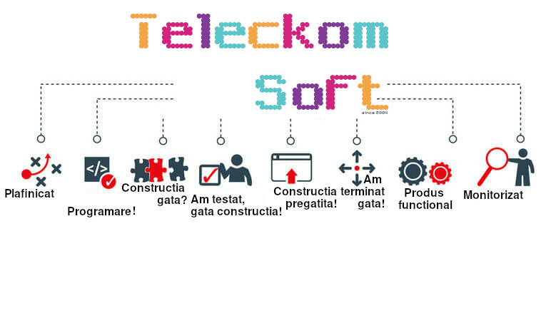

Despre noi
Despre mine
Proiecte lansate
Platesc
Sunt prezent pe facebook, internet, instagram, twitter, am pagina de internet, si afacerea automatizata numai de cat! Yuhuuu!
Info
Gestiune gradinita ta
Birou dentinst
Chelner restaurant
Livrari la domiciliu
Hotel sau pensiunea
Ferma noastra
